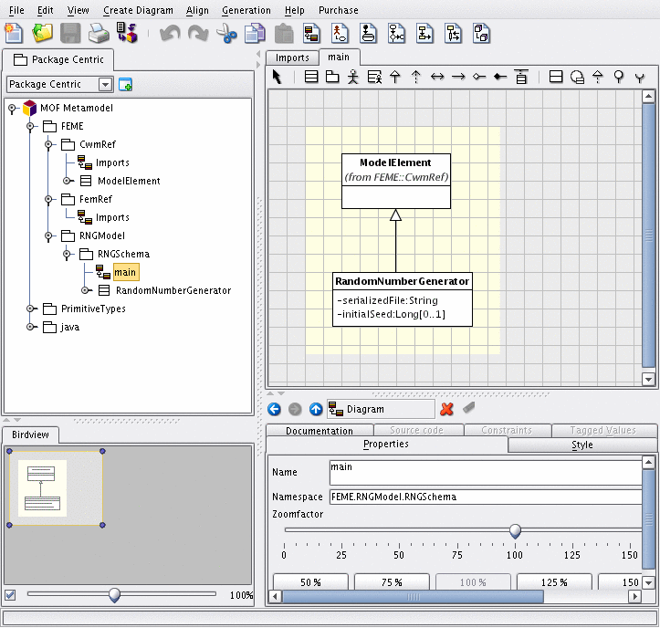

What does this mean? A platform with feature-level extensibility defines a fixed set of extensible features, and for each one defines service-provider interfaces and mechanisms for plugging in custom implementations. Here's our friend again after his feet and one of his eyes have been customized independently:
Examples of extensible features in existing DBMS projects include
Without system-level extensibility, your options are limited:
How do we do it? There are a few keys to the approach:
So, even using Farrago as a platform, you may at times still be faced with some of the unpleasant choices enumerated earlier in this document. However, you may be able to contribute extensibility enhancements to the platform and use them to satisfy your requirement, without the need for any ongoing patch/merge maintenance. And because of the system-level extensibility design goal, others are more likely to assist you with such an enhancement (assuming you take a sufficiently generic approach instead of just slipping in a special-case hack).
The success of the Eclipse project, an IDE "for anything and nothing in particular," provides hope that it's possible to do something similar for data management services.
In case it's not clear, taking advantage of system-level extensibility requires skilled developers with an understanding of UML modeling and server-side Java. For end-users and less-sophisticated developers, feature-level extensibility is more appropriate.
ALTER SYSTEM ADD CATALOG JAR statement,
which requires a JVM restart. The system supports multiple active
catalog model extensions.
ALTER
SESSION IMPLEMENTATION statement (session personality is typically
stateless for this reason). There is currently no support for
automatically combining multiple session personalities within a single
session; however, each session can have its own personality.
CREATE FOREIGN DATA WRAPPER statement.
CREATE LOCAL DATA WRAPPER
statement.
CREATE
PROCEDURE/FUNCTION/TYPE statements.
dev/farrago/examples/rng, and can be compiled and built
to test the extensibility mechanisms involved. (If you have a Farrago
developer build, run ant createPlugin from that
directory.) It also serves as a good clonable starting-point for
creating your own extension.
The premise is that we'd like to be able to add a random-number generator object to the system. It should be a first-class object like a traditional sequence generator, and should have persistent state to guarantee that the pseudo-random sequence won't repeat for as long as possible. Here's some sample SQL for how we want to be able to define and use a random-number generator:
-- define a new random number generator;
-- persist its state in a file named rng1.dat,
-- and give it an explicit seed so that the sequence is deterministic
create rng rng1 external 'rng1.dat' seed 999;
-- use a generated random number as a primary key for a new department;
-- generate the integer without any bound on the bits used to minimize
-- chance of a key collision
insert into depts(deptno,name)
values (next_random_int(unbounded from rng1), 'Lost and Found');
-- for each employee, generate a random number from 0 to 6 representing
-- the employee's day off
select name, next_random_int(ceiling 7 from rng1) as day_off
from emps;
NOTE: this example plugin is not designed for production use; it does not have proper concurrency control and transaction semantics, and its file-system persistence mechanism is neither high performance nor fault tolerant. Instead, the implementation is intended to be kept simple for instructional purposes.

Our new UML class (RandomNumberGenerator) is a subclass
of the generic CWM class ModelElement. Having
ModelElement as a superclass means that a RandomNumberGenerator has a
name, can be contained by a schema, and can have dependency
relationships with other objects. We've defined two additional
attributes for it: serializedFile is the file-system
location where the persistent state is stored, and
initialSeed is the (optional) seed defined when the RNG
is created (if missing, the current time will be used).
For such a simple model extension, usage of UML may appear to be overkill, and one could argue that a lighter-weight modeling infrastructure such as XSD or POJO reflection would be more appropriate. However, most real system-level extensions are expected to involve many classes with complex hierarchies and associations--a domain in which UML is the best fit. In addition, the rest of the system is JMI-based, and we want model extensions to work exactly like the rest of the model.
Once the extension model has been defined in UML, it can be translated
into JMI packages and corresponding XMI deployment descriptor. To do
this, the build script invokes the plugin.buildModel
target inherited from the framework script
dev/farrago/plugin/buildPlugin.xml. The
JMI interfaces are generated under
dev/farrago/examples/rng/catalog/java. The XMI
deployment descriptor is generated as
dev/farrago/examples/rng/catalog/xmi/RngPluginModelExport.xmi.
validateDefinition: during CREATE, expands the
location of the persistence file to an absolute path.
executeCreation: initializes a new random-number
generator (using class java.util.Random and the initial
seed, if specified) and persists its state
executeDrop: deletes the persistence file
At this point, we have everything we need to build and install a model
plugin jar, and the installation would create new system tables
capable of storing metadata about RNG's. However, doing so wouldn't
be very useful yet, because even though we've told the system what an
RNG is and how to react when someone wants to create one or drop one,
we haven't yet extended the DDL parser to actually support the custom
CREATE/DROP statements. (Theoretically,
parser-generation could be model-driven as well, but most system-level
extensions require custom syntax.) For that, we need a session
personality plugin.
Here's a snippet of the RNG example DDL parser
(dev/farrago/examples/rng/src/net/sf/farrago/rng/RngParser.jj):
CwmModelElement ExtensionModelSchemaObjDefinition() :
{
RngRandomNumberGenerator rng;
SqlIdentifier qualifiedName;
String externalLocation;
long seed;
}
{
<RNG>
{
rng = getRngModelPackage().getRngschema()
.getRngRandomNumberGenerator().createRngRandomNumberGenerator();
}
qualifiedName = CompoundIdentifier3()
{
farragoParser.getDdlValidator().setSchemaObjectName(
rng, qualifiedName);
}
<EXTERNAL> externalLocation = QuotedString()
{
rng.setSerializedFile(externalLocation);
}
[ <SEED> seed = UnsignedValue() { rng.setInitialSeed(new Long(seed)); } ]
{
return rng;
}
}
CwmModelElement ExtensionModelDrop() :
{
SqlIdentifier qualifiedName;
RngRandomNumberGenerator rng;
}
{
<RNG> qualifiedName = CompoundIdentifier3()
{
rng = (RngRandomNumberGenerator)
farragoParser.getStmtValidator().findSchemaObject(
qualifiedName,
getRngModelPackage().getRngschema().
getRngRandomNumberGenerator());
}
CascadeOption()
{
return rng;
}
}
TOKEN :
{
< NEXT_RANDOM_INT: "NEXT_RANDOM_INT" >
| < RNG: "RNG" >
| < SEED: "SEED" >
}
ExtensionModelSchemaObjDefinition and
ExtensionModelDrop grammar productions are defined as
no-ops in the standard parser; here we override them to accept our
custom RNG syntax and specify how to store the object definition in
the catalog (for later processing by
FarragoRngDdlHandler). In addition, JavaCC allows us to
define new tokens as needed.
All that's left is to make sure that
FarragoRngPluginFactory implements
extension interface
net.sf.farrago.session.FarragoSessionPersonalityFactory and
supplies Farrago with our customized parser instead of the default.
Class
class net.sf.farrago.rng.FarragoRngUDR contains static method
rng_next_int which can be used for this purpose. It
takes the name of the RNG and the desired ceiling and produces an
integer. It works by performing a catalog lookup to get the location
of the serialization file for the RNG, and then accesses that file to
instantiate the RNG, generate the next number, and then persist the
modified state.
The ant createPlugin task takes care of building the
plugin (dev/farrago/examples/rng/plugin/FarragoRng.jar).
Installing a model plugin performs some heavy-duty surgery on the
repository, and should only be performed from a single-user instance
of Farrago, so we'll use sqllineEngine for this purpose:
0: jdbc:farrago:> set schema 'sys_boot.sys_boot';
No rows affected (4.869 seconds)
0: jdbc:farrago:>
0: jdbc:farrago:> create jar rngplugin
. . . . . . . . > library 'file:${FARRAGO_HOME}/examples/rng/plugin/FarragoRng.jar'
. . . . . . . . > options(0);
No rows affected (0.197 seconds)
0: jdbc:farrago:>
0: jdbc:farrago:> alter system add catalog jar rngplugin;
No rows affected (7.887 seconds)
0: jdbc:farrago:> Closing: net.sf.farrago.jdbc.engine.FarragoJdbcEngineConnection
ALTER SYSTEM ADD CATALOG JAR statement
completes, the system is in an unusable state and must be shut down
immediately; the next restart will complete the installation process
as part of catalog boot.)
Now, let's give our newly installed plugin a whirl:
0: jdbc:farrago:> create schema rngtest;
No rows affected (0.21 seconds)
0: jdbc:farrago:> set schema 'rngtest';
No rows affected (2.223 seconds)
0: jdbc:farrago:> set path 'rngtest';
No rows affected (0.022 seconds)
0: jdbc:farrago:> alter session implementation set jar sys_boot.sys_boot.rngplugin;
No rows affected (0.049 seconds)
0: jdbc:farrago:> create rng rng1 external '${FARRAGO_HOME}/testgen/rng1.dat' seed 999;
No rows affected (0.446 seconds)
0: jdbc:farrago:> create function rng_next_int(
. . . . . . . . > rng_name varchar(512),
. . . . . . . . > n int)
. . . . . . . . > returns int
. . . . . . . . > language java
. . . . . . . . > reads sql data
. . . . . . . . > external name
. . . . . . . . > 'sys_boot.sys_boot.rngplugin:net.sf.farrago.rng.FarragoRngUDR.rng_next_int';
No rows affected (0.444 seconds)
0: jdbc:farrago:> select name,rng_next_int('rng1',7) as day_off
. . . . . . . . > from sales.emps;
+--------+----------+
| NAME | DAY_OFF |
+--------+----------+
| Fred | 1 |
| Eric | 6 |
| Wilma | 5 |
| John | 1 |
+--------+----------+
4 rows selected (0.081 seconds)
ALTER SESSION IMPLEMENTATION SET JAR. Normally, either a
system-level extension would include a session manager implementation
which does this automatically, or the correct default personality
would be associated with each user profile (this association is not
yet implemented).
SqlNode ExtendedBuiltinFunctionCall() :
{
SqlIdentifier id;
long longCeiling;
int ceiling = -1;
RngRandomNumberGenerator rng;
}
{
<NEXT_RANDOM_INT>
<LPAREN>
(
<CEILING> longCeiling = UnsignedValue()
{
ceiling = (int) longCeiling;
}
| <UNBOUNDED>
)
<FROM>
id = CompoundIdentifier3()
<RPAREN>
{
rng = (RngRandomNumberGenerator)
farragoParser.getStmtValidator().findSchemaObject(
id,
getRngModelPackage().getRngschema().
getRngRandomNumberGenerator());
return
FarragoRngOperatorTable.rngInstance().nextRandomInt.createCall(
new SqlNode [] {
SqlLiteral.createExactNumeric(
Integer.toString(ceiling),
getPos()),
SqlLiteral.createCharString(
FarragoCatalogUtil.getQualifiedName(rng).toString(),
getPos()),
SqlLiteral.createCharString(
FarragoProperties.instance().expandProperties(
rng.getSerializedFile()),
getPos())
},
getPos());
}
}
ExtendedBuiltinFunctionCall is another parser extension
point. Our custom production and accompanying Java code constructs
a SqlNode instance representing the NEXT_RANDOM_INT call.
But what is that reference to FarragoRngOperatorTable? Our
plugin defines an extension to the standard table of SQL operators
provided by Farrago. For each custom expression such as
NEXT_RANDOM_INT, we define a corresponding operator
(FarragoRngNextRandomIntOperator in this case) with
custom behavior for validating instances of the expression (and other
details, such as how to unparse expression instances back into SQL
text). The validation code also calls back into Farrago to record the
dependency of the query on the RNG.
Besides validation, we also need to tell Farrago how to generate
executable code to implement the expression as part of a query plan.
This logic is encapsulated in FarragoRngImplementorTable,
which generates Java code for a call to an optimized version of the
UDF defined previously. This optimized version
(rng_next_int_internal) takes the persistence file
location as a parameter so that it can skip the catalog lookup (which
instead is done only once during query validation).
Finally, FarragoRngPluginFactory takes care of making
sure that our custom validation and code generation behavior gets
supplied to Farrago by implementing the correct session personality
interfaces. Putting it all together:
0: jdbc:farrago:> set schema 'rngtest';
No rows affected (0.018 seconds)
0: jdbc:farrago:>
0: jdbc:farrago:> create view emp_days_off as
. . . . . . . . > select name,next_random_int(ceiling 7 from rng1) as day_off
. . . . . . . . > from sales.emps;
No rows affected (1.28 seconds)
0: jdbc:farrago:>
0: jdbc:farrago:> select * from emp_days_off;
+--------+----------+
| NAME | DAY_OFF |
+--------+----------+
| Fred | 0 |
| Eric | 6 |
| Wilma | 3 |
| John | 2 |
+--------+----------+
4 rows selected (3.976 seconds)
0: jdbc:farrago:>
0: jdbc:farrago:> drop rng rng1 restrict;
Error: Dropping random number generator "RNGTEST"."RNG1" requires CASCADE because other objects still reference it (state=,code=0)
0: jdbc:farrago:>
0: jdbc:farrago:> drop view emp_days_off;
No rows affected (0.277 seconds)
0: jdbc:farrago:>
0: jdbc:farrago:> drop rng rng1 restrict;
No rows affected (0.052 seconds)
EMP_DAYS_OFF on RNG1. The custom drop logic
in FarragoRngDdlHandler does not do anything special to
enforce the RESTRICT option; instead, the uncustomized DDL validator
knows how to enforce that automatically because dependencies are a
generic part of the catalog model, and our model extension is now part
of the catalog model. Likewise, the statement DROP SCHEMA
RNGTEST CASCADE will know that it is supposed to drop the
contained object RNG1, automatically invoking its custom
RNG drop logic as well.
0: jdbc:farrago:> create server sys_rng
. . . . . . . . > foreign data wrapper sys_mdr
. . . . . . . . > options(root_package_name 'RNGModel');
No rows affected (0.114 seconds)
0: jdbc:farrago:>
0: jdbc:farrago:> select * from sys_rng."RNGSchema"."RandomNumberGenerator";
+-------+-------------+---------------------+-----------------------------------+--------------+---------------------+------------------------+
| name | visibility | namespace | serializedFile | initialSeed | mofId | mofClassName |
+-------+-------------+---------------------+-----------------------------------+--------------+---------------------+------------------------+
| RNG1 | vk_public | j:0000000000001DE1 | ${FARRAGO_HOME}/testgen/rng1.dat | 999 | j:0000000000001DE6 | RandomNumberGenerator |
+-------+-------------+---------------------+-----------------------------------+--------------+---------------------+------------------------+
1 row selected (0.802 seconds)
0: jdbc:farrago:> create view rng_list as
. . . . . . . . > select
. . . . . . . . > s.object_catalog as rng_catalog,
. . . . . . . . > s.object_schema as rng_schema,
. . . . . . . . > r."name" as rng_name,
. . . . . . . . > r."serializedFile" as serialized_file,
. . . . . . . . > r."initialSeed" as initial_seed
. . . . . . . . > from
. . . . . . . . > sys_boot.jdbc_metadata.schemas_view_internal s
. . . . . . . . > inner join
. . . . . . . . > sys_rng."RNGSchema"."RandomNumberGenerator" r
. . . . . . . . > on
. . . . . . . . > s."mofId" = r."namespace"
. . . . . . . . > ;
No rows affected (0.504 seconds)
0: jdbc:farrago:>
0: jdbc:farrago:> select * from rng_list;
+--------------+-------------+-----------+-----------------------------------+---------------+
| RNG_CATALOG | RNG_SCHEMA | RNG_NAME | SERIALIZED_FILE | INITIAL_SEED |
+--------------+-------------+-----------+-----------------------------------+---------------+
| LOCALDB | RNGTEST | RNG1 | ${FARRAGO_HOME}/testgen/rng1.dat | 999 |
+--------------+-------------+-----------+-----------------------------------+---------------+
1 row selected (3.363 seconds)
| End $Id$ |